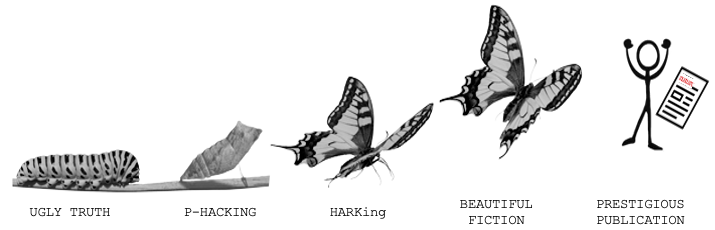

Chapter 12 Preregistration
- Recognize the dangers of researcher degrees of freedom in “the garden of forking paths”
- Understand the differences between exploratory and confirmatory modes of research
- Learn how preregistration and other tools can reduce risk of bias and help others to evaluate your work by increasing transparency
When not planned beforehand, data analysis can approximate a projective technique, such as the Rorschach, because the investigator can project on the data his own expectancies, desires, or biases and can pull out of the data almost any ‘finding’ he may desire.
The first principle is that you must not fool yourself–and you are the easiest person to fool…After you’ve not fooled yourself, it’s easy not to fool other scientists. You just have to be honest in a conventional way after that.
This may surprise you coming from the authors of a textbook about research methods, but there is no single “correct” way to design and analyze an experiment.154 Though there are plenty of incorrect ways to design and analyse experiments and we hope we can help you to avoid these! In fact, for most research decisions, there are many justifiable options. For example, will you stop data collection after 20, 200, or 2000 participants? Will you remove outlier values and how will you define them? Will you conduct subgroup analyses to see whether the results are affected by sex, or age, or some other factor? Consider a simplified, hypothetical case where you need to make five analysis decisions and have five justifiable options for each decision — this alone would result in 3125 (5^5) unique ways to analyze your data!
In this chapter, we will find out why undisclosed flexibility in the design, analysis, reporting, and interpretation of experiments (also referred to as “researcher degrees of freedom”), can lead to scientists fooling themselves and fooling each other. We will also learn about how preregistration – the process of writing down and registering your design and analysis decisions before you conduct your study – (and other tools) can be used to protect our research from bias and provide the transparency that other scientists need to properly evaluate and interpret our work.
Our bottom line is that the best practice is to document your experiment – including critical design, sampling, and analysis decisions – before collecting data. This documentation can help you think through your choices to ensure that they are maximally aligned with your goals. Further, the documentation can be timestamped using an external registry and shared so as to show which decisions were post hoc and which were made in advance.
Undisclosed analytic flexibility?
Educational apps for children are a huge market, but relatively few high-quality, randomized trials have been done to see whether or when they produce educational gains. In that context, Berkowitz et al. (2015) reported a high-quality field experiment of educational apps, with participants randomly assigned to either a math or reading app over the course of a full school year. Critically, along with random assignment, the study also included standardized measures of math and reading achievement. These measures allowed the authors to compute effects in grade-level equivalents, a meaningful unit from a policy perspective. The key result reported by the paper is shown in Figure @(fig:prereg-berkowitz). Families who used the math app frequently showed greater gains in math than the control group.
 Figure 12.1: Figure 1 of Berkowitz et al. (2015). Estimated years of math achievement gained over the school year across groups.
Figure 12.1: Figure 1 of Berkowitz et al. (2015). Estimated years of math achievement gained over the school year across groups.
Although this finding appeared striking, something was a little odd about the main analyses, exemplified by Figure 12.1. There was no way to see an estimate of the primary causal effect of interest, namely the effect of condition on math scores. Instead the data were presented as estimated effects for specific points – a “matched” subgroup in panel A and the entire group in panel B – both broken down by app usage.
Naively, including app usage might seem like it “clarifies” the causal effect of the app – since if you didn’t use the app, it couldn’t have any effect at all! The trouble with this logic is that usage is not causally isolated from the system, and hence it can be confounded with other factors (as discussed in Chapter 1)! Put another way, families that use the app extensively probably differ in other ways from samples that don’t – maybe they’re more concerned with math learning in general. So we can’t compare high-usage families and conclude that the app is useful in general.
Figure 12.2: Figure 1 of Frank (2016). Estimated years of math achievement gained over the school year across groups.

When the primary causal effect of interest was estimated via a simple approach, the intervention appeared to have a very weak effect [Figure 12.2; Frank (2016)]. Since this analysis was not favorable to the primary intervention – and because it was not reported in the paper – a reader might worry that the authors had chosen an analysis that “looked better” with respect to their hypotheses of interest. The original authors responded that their analyses were entirely based on prior research and argued that the disagreement about how the data should be analyzed was “philosophical” (Berkowitz et al., 2016).
Disagreements about data analysis are an important feature of the scientific discourse. The problem here is that it is very difficult to know the extent to which the original analysis was influenced by the results. If the analysis plan had been preregistered, this simple step would have reduced the risk of bias and hence increased the value of the estimates resulting from this high-quality study.155 Preregistration cannot magically improve a poorly specified analysis. Some of the original analyses in the paper were straightforwardly erroneous: they concluded that there was an effect in one group but not in another by testing the effect separately in those groups and neglecting to test the interaction. This is a statistical fallacy, regardless of whether the analyses were preregistered (Gelman & Stern, 2006). Nevertheless, preregistration would have provided transparency to enable a more informed scientific debate about the results without concern for whether they influenced by undisclosed analytic flexibility.
12.1 Lost in a garden of forking paths
 Figure 12.3: Garden of forking paths (placeholder image I hacked together, replace with an illustration?)
Figure 12.3: Garden of forking paths (placeholder image I hacked together, replace with an illustration?)
One way to visualize researcher degrees of freedom is as a vast decision tree or “garden of forking paths” (Gelman & Loken, 2014 Figure 12.3). Each node represents a decision point and each branch represents a justifiable choice. Each unique pathway through the garden terminates in an individual result.
Because scientific observations typically consist of both noise (random variation unique to this sample) and signal (regularities that will reoccur in other samples), some of these pathways will inevitably lead to results that are misleading (e.g., inflated effect sizes, exaggerated evidence, or false positives).156 The signal-to-noise ratio is worse in situations (alas, common in psychology) that involve small effect sizes, high variation, and large measurement errors (Ioannidis, 2005). Researcher degrees of freedom may be constrained to some extent by strong theory (Oberauer & Lewandowsky, 2019), community methodological norms and standards, or replication studies, though these constraints may be more implicit than explicit, and can still leave plenty of room for flexible decision-making. The more potential paths there are in the garden that you might explore, the higher the chance of encountering misleading results.157 In frequentist terminology, there is an increasing the chance of making a “Type I error”. Statisticians refer to this as a multiplicity problem.
As we talked about in Chapter 6, multiplicity can be addressed to some extent with statistical countermeasures, like the Bonferroni correction; however, these adjustment methods need to account for every path that you could have taken (de Groot, 1956/2014; Gelman & Loken, 2014). When you navigate the garden of forking paths during data analysis, it is easy to forget, or even be unaware of every path that you could have taken, so these methods can no longer be used effectively.
12.1.1 Results-dependent analysis
When a researcher navigates the garden of forking paths during data analysis, their decisions can be biased because they are receiving feedback on how different choices affect the results (results-dependent decision making). If a researcher is seeking a particular kind of result (which is likely – see the interaction box below), then they are more likely to follow the branches that steer them in that direction.
You could think of this a bit like playing a game of “hot🔥! or cold☃️!” where hot🔥! indicates that the choice will move the researcher closer to a desirable overall result and cold☃️! indicates that the choice will move them further away. Each time the researcher reaches a decision point, they try one of the branches and get feedback on how that choice affects the results. If the feedback is hot🔥! then they take that branch. If the answer is cold☃️!, they try a different branch. If they reach the end of a complete pathway, and the results are cold☃️!, maybe they even retrace their steps and try some different branches earlier in the pathway. This strategy create a risk of bias158 We say “risk of bias” rather than just “bias” because in most scientific contexts, we do not have a known ground truth to compare the results to. So in any specific situation, we do not know the extent to which results-dependent analyses have actually biased the results. because the results are being systematically skewed towards the researcher’s preferences159 Another way to think of this is in terms of ‘regression to the mean’. When a sample statistic is selected because it crosses some threshold (e.g., statistical significance), then it is more likely to provide a biased estimate that decreases upon subsequent measurement. (Hardwicke & Wagenmakers, 2021).
Only human: Cognitive biases and skewed incentives
There’s a storybook image of the scientist as an objective, rationale, and dispassionate arbiter of truth (Veldkamp et al., 2017). But in reality, scientists are only human: they have egos, career ambitions, and rent to pay! So even if we do want to live up to the storybook image, its important to acknowledge that our decisions and behaviour are also influenced by a range of cognitive biases and external incentives that can steer us away from that goal. This highlights the need for transparency and intellectual humility (Hoekstra & Vazire, 2020) when reporting the findings of our research. Let’s first look at some relevant cognitive biases that might lead scientists astray:
Confirmation bias: Preferentially seeking out, recalling, or evaluating information in a manner that reinforces one’s existing beliefs (Nickerson, 1998).
Hindsight bias: Believing that past events were always more likely to occur relative to our actual belief in their likelihood before they happened (“I knew it all along!”) (Slovic & Fischhoff, 1977).
Motivated reasoning: Rationalizing prior decisions so they are framed in a favorable light, even if they were irrational (Kunda, 1990).
 Figure 12.4: Examples of apophenia: Mars Face, Winnie the Pooh Cloud, and Jesus Toast.
Figure 12.4: Examples of apophenia: Mars Face, Winnie the Pooh Cloud, and Jesus Toast.
Apophenia: Detecting seemingly meaningful patterns in noise (Figure 12.4) (Gilovich et al., 1985).
 Figure 12.5: The Chrysalis Effect, when ugly truth becomes a beautiful fiction.
To make matters worse, the incentive structure of the scientific ecosystem often adds additional motivation to get things wrong. The allocation of funding, awards, and publication prestige is often based on the nature of research results rather than research quality (B. A. Nosek et al., 2012; Paul E. Smaldino & McElreath, 2016). For example, many academic journals, especially those that are widely considered to be the most prestigious, appear to have a preference for novel, positive, and ‘statistically significant’ findings over incremental, negative, or null findings (Bakker et al., 2012). There is also pressure to write articles with concise, coherent, and compelling narratives (Giner-Sorolla, 2012). This set of forces incentivize scientists to be “impressive” over being right and encourages questionable research practices. The process of iteratively p-hacking and HARKing one’s way to a “beautiful” scientific paper has been dubbed “The Chrysalis Effect” (O’Boyle et al., 2017), as shown in Figure 12.5.
In the most egregious cases, a researcher may try multiple pathways until they obtain a desirable result160 “If you torture the data long enough, it will confess” (Good, 1972) and then selectively report that result, neglecting to mention that they have tried several other analysis strategies. You may remember an example of this type when participants apparently became younger when they listened to “When I’m 64” by The Beatles in Chapter 4. Another nice example of how damaging the garden of forking paths can be comes from the “discovery” of brain activity in a dead Atlantic Salmon! Researchers deliberately exploited flexibility in the fMRI analysis pipeline to find brain activity where there was only dead fish (Figure 12.6, Bennett et al., 2009).
Deliberately taking advantage of researcher degrees of freedom and selectively reporting results is known by various names, like p-hacking, cherry picking, data dredging, and it is unethical because it involves hiding highly relevant information. But you should also be aware that results-dependent analysis incurs a risk of bias even if a researcher has good intentions, doesn’t explicitly try multiple pathways, and honestly reports everything they did.
If a researcher examines a dataset and takes a set of hot🔥 paths, they may reach the result they desire at the end of the pathway without realizing that – had the results been different – they would have followed other pathways (de Groot, 1956/2014; Gelman & Loken, 2014). Even though the researcher didn’t intend to hide anything, there is still undisclosed analytic flexibility – important context that is relevant to interpret the results properly. It’s surprisingly easy to convince yourself after the fact that you made the decisions you did for principled reasons that had nothing to do with the results (see “motivated reasoning” box). Results-dependent analysis increases the chances that you will fool yourself by inadvertently stumbling across misleading results. If that analytic flexibility goes undisclosed, you may fool others too.
 Figure 12.6: By deliberately exploiting analytic flexibility in the processing pipeline of fMRI data, Bennet et al. (2009) were able to identify ‘brain activity’ in a dead Atlantic Salmon.
Figure 12.6: By deliberately exploiting analytic flexibility in the processing pipeline of fMRI data, Bennet et al. (2009) were able to identify ‘brain activity’ in a dead Atlantic Salmon.
12.1.2 Hypothesize after results are known?
In addition to flexibility in analysis, there is additional flexibility in how researchers explain research results. As we discussed in Chapter 2, theories can accommodate even conflicting results in many different ways – for example, by positing auxilliary hypotheses that explain why a particular datapoint is special. We might call these different routes for accommodating theory with data “explanatory degrees of freedom”.
The practice of selecting or developing your hypothesis after seeing the study results has been called “Hypotheisizing After the Results are Known”, or “HARKing” (Kerr, 1998). HARKing is potentially problematic because it expands the garden of forking paths and helps to justify the use of various analytic degrees of freedom (Figure 12.7). For example, you may come up with an explanation for why an intervention is effective in men but not in women in order to justify a post-hoc subgroup analysis based on sex (see Case Study). The extent to which HARKing is problematic is contested (for discussion see Hardwicke & Wagenmakers, 2021). But at the very least it’s important to be honest about whether hypotheses were developed before or after seeing research results.
Figure 12.7: A scientist exploring a grid of individual research results. The horizontal axis illustrates a simplified ‘garden of forking paths’: the many justifiable analysis specifications that the scientist can use to transform the data (D) into the evidence (E). The vertical axis illustrates that there may be several relevant theories (T), and hypotheses (H) derived from those theories, which could be constructed or selected and then confronted with the evidence. Thus, an unconstrained scientist can simultaneously exploit their analytic degrees of freedom and explanatory degrees of freedom to fit evidence to hypotheses and fit hypotheses to evidence in order to arrive at a study outcome that is more likely to align more with their preferences, but less likely to align with the truth. Caption is copied verbatim so needs editing. Shared under a CC-BY license, artwork by Viktor Beekman, concept by Tom Hardwicke and Eric-Jan Wagenmakers.
![A scientist exploring a grid of individual research results. The horizontal axis illustrates a simplified ‘garden of forking paths’: the many justifiable analysis specifications that the scientist can use to transform the data (D) into the evidence (E). The vertical axis illustrates that there may be several relevant theories (T), and hypotheses (H) derived from those theories, which could be constructed or selected and then confronted with the evidence. Thus, an unconstrained scientist can simultaneously exploit their analytic degrees of freedom and explanatory degrees of freedom to fit evidence to hypotheses and fit hypotheses to evidence in order to arrive at a study outcome that is more likely to align more with their preferences, but less likely to align with the truth. Caption is copied verbatim so needs editing. Shared under a CC-BY license, artwork by Viktor Beekman, concept by Tom Hardwicke and Eric-Jan Wagenmakers.](images/prereg/grid.jpg)
But hang on a minute! Isn’t it a good thing to seek out interesting results if they are there in the data? Shouldn’t we “let the data speak”? The answer is yes! Exploratory research is not the same as p-hacking. P-hacking is explicitly dishonest because it involves deliberately withholding information. In contrast, exploratory data analysis is a critical part of the scientific process (see Chapter 17 for further discussion).
The important thing to remember about exploratory research is that you need to (a) be aware of the increased risk of bias and calibrate your confidence in the results accordingly; (2) be honest with other researchers about your analysis strategy so they are also aware of the risk of bias and can calibrate their confidence in the results accordingly. It’s important to understand the distinction between exploratory and confirmatory research modes.161 In practice, an individual study may contain both exploratory and confirmatory aspects which is why we describe them as different “modes.” Confirmatory research involves making design and analysis decisions before the results have been observed. In the next section, we will learn about how to do that using preregistration.
12.2 Reducing bias, increasing transparency, and calibrating confidence with preregistration
If you make research decisions before you see the study results, you can counter the problem of undisclosed researcher degrees of freedom outlined above. That way, your decisions are made before seeing the study results – a bit like planning your route through the garden of forking paths before you start your journey. Preregistration is a great way to do this (Hardwicke & Wagenmakers, 2021; Wagenmakers et al., 2012).
Preregistration is the process of declaring your research decisions in an public registry before you analyze (and often before you collect) the data. Preregistration ensures that your decisions are results-independent, which reduces risk of bias arising from the issues described above. Preregistration also transparently conveys to others what you planned, helping them to determine the risk of bias and calibrate their confidence in the results. In other words, preregistration transparently provides the context needed to properly evaluate and interpret research. In theory, preregistration dissuades researchers from engaging in questionable research practices like p-hacking and undisclosed HARKing, because they can be held accountable to their original plan.
Preregistration does not require that you specify all research decisions in advance, only that you are transparent about what was planned, and what was not planned. This division helps to make a distinction between which aspects of the research were exploratory and which were confirmatory (Figure 12.8). All else being equal, we should have more confidence in confirmatory findings, because there is a lower risk of bias. Exploratory analyses have a higher risk of bias, but they are also more sensitive to serendipitous (unexpected) discoveries. Exploratory and confirmatory research are both valuable activities – it is just important to differentiate them (John W. Tukey, 1980)! Preregistration offers the best of both worlds by clearly separating one from the other.
Figure 12.8: Preregistration clarifies where aspects of your research fall on a spectrum of exploratory and confirmatory modes of research. A preregistration is just a snapshot of your current thinking. If you have planned very little, your preregistration may not have much detail, but that’s absolutely fine! The important thing is that preregistration transparently conveys what was planned (confirmatory) and what was not (exploratory). Increasing the amount of detail in your preregistration increases your protection against bias.
![Preregistration clarifies where aspects of your research fall on a spectrum of exploratory and confirmatory modes of research. A preregistration is just a snapshot of your current thinking. If you have planned very little, your preregistration may not have much detail, but that's absolutely fine! The important thing is that preregistration transparently conveys what was planned (confirmatory) and what was not (exploratory). Increasing the amount of detail in your preregistration increases your protection against bias.](images/prereg/continuum.png)
In addition to the benefits described above, preregistration may improve the quality of research by encouraging closer attention to study planning. We’ve found that the process of writing a preregistration really helps facilitate communication between collaborators, and can catch addressable problems before time and resources are wasted on a poorly designed study. Detailed advanced planning can also create opportunities for useful community feedback, particularly in the context of Registered Reports, where dedicated peer reviewers will evaluate your study before its even begun (Box 2).
Preregistration and friends: A toolbox to address researcher degrees of freedom
Several useful tools and concepts that can be used to complement or extend preregistration. In general, we would recommend that these are combined with preregistration, rather than used as a replacement. Preregistration provides transparency about the research and planning process, so its function complements other methods for avoiding bias (Hardwicke & Wagenmakers, 2021).
Robustness checks. Robustness checks (also called “sensitivity analyses”) assess how different decision choices in the garden of forking paths affect the eventual pattern of results. This technique is particularly helpful when you have to choose between several justifiable analytic choices, neither of which seem superior to the other, or which have complementary strengths and weaknesses. For example, you might run the analysis three times using three different methods for handling missing data. Robust results should not vary substantially across the three different choices.
Multiverse analyses. Recently, some researchers have started running large-scale robustness checks. These have been called “multiverse analysis” (Steegen et al., 2016) or “specification curve analysis” (Simonsohn et al., 2020). These techniques evaluate the factorial intersection of multiple choices for multiple decisions – like simultaneously evaluating thousands of pathways in the garden of forking paths. Some have argued that these large-scale robustness checks can make preregistration redundant; after all, why prespecify a single path if you can explore them all (Oberauer & Lewandowsky, 2019; Rubin, 2020)? But interpreting the results of a multiverse analysis are not straightforward; for example, it seems unlikely that all of the decision choices are equally justifiable (Giudice & Gangestad, 2021). Furthermore, if robustness checks are not preregistered, then they introduce researcher degrees of freedom, and create an opportunity for selective reporting, which increases risk of bias.
Held-out sample. One option to benefit from both exploratory and confirmatory research modes is to split your data into training and test samples. (The test sample is commonly called the “held out” because it is “held out” from the exploratory process.) You can generate hypotheses in an exploratory mode in the training sample and use that as the basis to preregister confirmatory analyses in the hold-out sample. A notable disadvantage of this strategy is that splitting the data reduces statistical power, but in cases where data are plentiful – including in much of machine learning – this technique is the gold standard.
Masked analysis (sometimes also called “blind analysis”). Sometimes problems, such as missing data, attrition, or randomization failure can arise during data collection that you did not anticipate in your preregistered plan. How do you diagnose and address these issues without increasing risk of bias through results-dependent analysis? One option is masked analysis, which disguises aspects of the data related to the results (for example, by shuffling condition labels or adding noise) while still allowing some degree of data inspection (Dutilh et al., 2019). After diagnosing a problem, you can adjust your preregistered plan without increasing risk of bias, because you have not engaged in results-dependent decision making.
Standard Operating Procedures. Community norms, perhaps at the level of your research field or lab, can act as a natural constraint on researcher degrees of freedom. For example, there may be a generally accepted approach for handling outliers in your community. You can make these constraints explicit by writing them down in a Standard Operating Procedures document - a bit like a living meta-preregistration (Lin & Green, 2016). Each time you preregister an individual study, you can co-register this document alongside it. Make sure you are clear about which document you will follow in the event of a mismatch!
Open lab notebooks. Maintaining a lab notebook can be a useful way to keep a record of your decisions as a research project unfolds. Preregistration is bit like taking a snapshot of your lab notebook at the start of the project, when all you have written down is your research plan. Making your lab notebook publicly available is a great way to transparently document your research and departures from the preregistered plan.
Registered Reports. Registered Reports are a type of article format that embeds preregistration directly into the publication pipeline [Chambers & Tzavella (2020); Figure 12.9]. The idea is that you submit your preregistered protocol to a journal and it is peer reviewed, before you’ve even started your study. If the study is approved, the journal agrees to publish it, regardless of the results. This is a radical departure from traditional publication models where peer reviewers and journals evaluate your study after its been completed and the results are known. Because the study is accepted for publication independently of the results, Registered Reports can offer the benefits of preregistration with additional protection against publication bias. They also provide a great opportunity to feedback on your study design while you can still change it!
 Figure 12.9: Registered Reports (https://www.cos.io/initiatives/registered-reports)
Figure 12.9: Registered Reports (https://www.cos.io/initiatives/registered-reports)
12.3 How to preregister
High-stakes studies such as medical trials must be preregistered (Dickersin & Rennie, 2012). In 2005, a large international consortium of medical journals decided that they would not publish unregistered trials. And the discipline of economics has strong norms about study registration (see e.g. https://www.socialscienceregistry.org). But preregistration is actually pretty new to psychology (B. A. Nosek et al., 2018), and there’s still no standard way of doing it – you’re already at the cutting edge!
We recommend using the Open Science Framework (OSF) as your registry. OSF is one of the most popular registries in psychology and you can do lots of other useful things there to make your research transparent, like sharing data, materials, analysis scripts, and preprints. On the OSF it is possible to “register” any file you have uploaded. When you register a file, it creates a timestamped, read-only copy, with a dedicated link. You can add this link to articles reporting your research.
One approach to preregistration is to write a protocol document that specifies the study rationale, aims or hypotheses, methods, and analysis plan, and register that document.162 You can think of a study protocol a bit like a research paper without a results and discussion section (here’s an example from one of our own studies: https://osf.io/2cnkq/). The OSF also has a collection of dedicated preregistration templates that you can use if you prefer. These templates are often tailored to the needs of particular types of research. For example, there are templates for general quantitative psychology research (“PRP-QUANT” Bosnjak et al., 2021), cognitive modelling (Crüwell & Evans, 2021), and secondary data analysis (Akker et al., 2019). The OSF interface may change, but currently this guide provides a set of steps to create a preregistration.
Once you’ve preregistered your plan, you just go off and run the study and report the results, right? Well hopefully… but things might not turn out to be that straightforward. It’s quite common to forget to include something in your plan or to have to depart from the plan due to something unexpected. Preregistration can actually be pretty hard in practice (B. A. Nosek et al., 2019)!
Don’t worry though - remember that the primary goal of preregistration is transparency to enable others to evaluate and interpret our work. If you decide to depart from your original plan and conduct results-dependent analyses, then this decision may increase the risk of bias. But if you communicate this decision transparently to your readers, they can appropriately calibrate their confidence in the results. You may even be able to run both the planned and unplanned analyses as a robustness check (see Box) to evaluate the extent to which this choice impacts the results.
When you report your study, it is important to distinguish between what was planned and what was not. If you ran a lot of results-dependent analyses, then it might be worth having separate exploratory and confirmatory results sections. On the other hand, if you mainly stuck to your original plan, with only minor departures, then you could include a table (perhaps in an appendix) that outlines these changes (for example, see Supplementary Information A of this article).
12.4 Chapter summary: Preregistration
We’ve advocated here for preregistering your planned analyses. This practice allows us to minimize bias caused by results-dependent analysis (the “garden of forking paths” that we described). Preregistration is a “plan, not a prison”: in most cases preregistered, confirmatory analyses coexist with exploratory analyses. Both are an important part of good research – the key is simply to disclose which is which!
P-hack your way to scientific glory! To get a feel for how results-dependent analyses might work in practice, have a play around with this app: https://projects.fivethirtyeight.com/p-hacking/
Preregister your next experiment! The best way to get started with preregistration is to have a go with your next study. Head over to https://osf.io/registries/osf/new and register your study protocol or complete one of the templates.